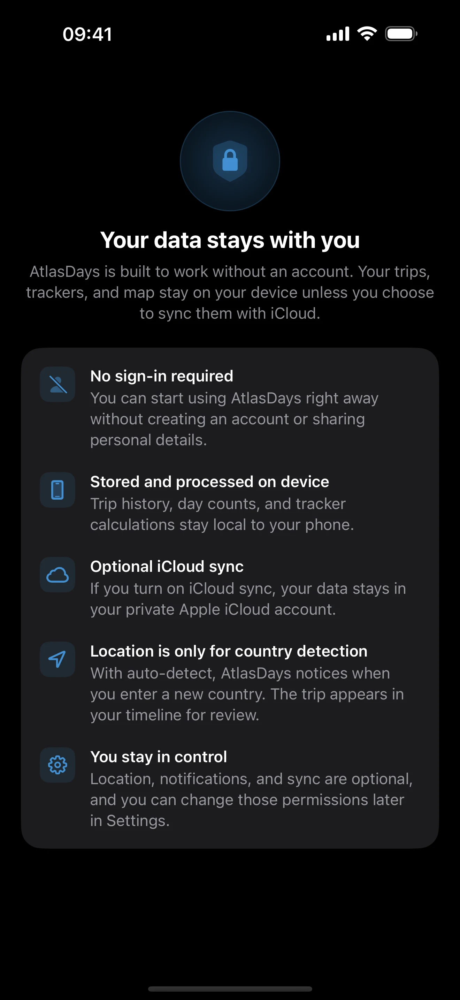
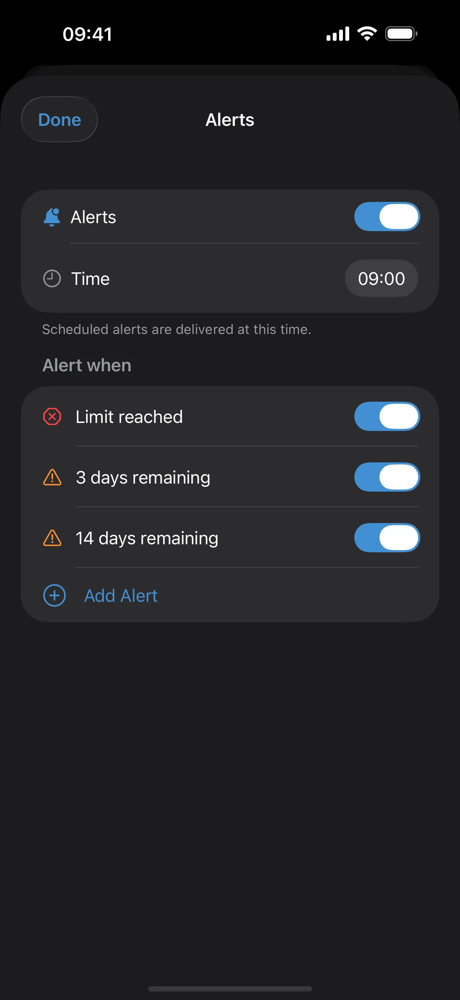

Privacy, Location, and Sync
Last updated: July 10, 2026
Troubleshoot Auto-Detect Trips, notification permission, and iCloud sync confusion without losing sight of AtlasDays' local-first privacy model.

What This Page Helps You Do
Use this page when Auto-Detect Trips is delayed or missing, notifications or tracker alerts do not arrive, or you want a clear answer about what stays local and what iCloud sync changes.
By the end of this page, you should know:
- why Auto-Detect Trips or alerts may not behave as expected
- how ignored countries affect Auto-Detect Trip suggestions
- what Photos access is used for during Photo Import
- what CSV and Flighty imports do without Photos or location permission
- which permissions matter for which features
- what stays local by default and when iCloud sync is worth turning on
AtlasDays is local-first. There is no AtlasDays account, no sign-in, and no AtlasDays server copy of your trip history. Trips, trackers, and day calculations work on-device by default.
When Auto-Detect Trips or Notifications Do Not Behave as Expected
Most confusion here comes from how background detection and local alerts work on iOS. Check these first:
- Auto-Detect Trips is optional. AtlasDays still works fully for manual entry if you leave it off.
- Auto-Detect Trips uses iOS significant location changes, not continuous GPS, so suggestions can be delayed and some crossings can be missed.
- AtlasDays does not silently create a new trip. New detections become suggestions that you review, edit, confirm, or dismiss in Timeline.
- If you already confirmed an Open-ended trip, later detection of a different place can close that existing trip on the detected departure date. This is an end-date update, not a newly created trip.
- If the app is force-quit, background detection may stop until AtlasDays is opened again.
- If notification permission is denied, background suggestion alerts and tracker alerts may not appear.
- Silence does not prove nothing changed. Review the underlying trip record instead of assuming no suggestion or no alert means no country change or no tracker issue.
What AtlasDays Stores on Your Device
Your trip record and tracker data live in the app's local data store on your device by default. Manual trip entry, dashboard review, tracker calculations, Photo Import, CSV import, Flighty import, and export all work without an AtlasDays account.
AtlasDays also keeps some device-level app state locally, such as pending trip suggestions, so the app can continue where you left off.
If you are signed into iCloud, AtlasDays can also mirror a smaller set of preferences through Apple's iCloud key-value storage. That preference carry-over is separate from full iCloud sync.

How Auto-Detect Trips Works

Auto-Detect Trips is optional. When you turn it on, AtlasDays uses iOS significant-change location monitoring to notice that you may have entered a different country and then resolves the country on device using bundled country boundaries. For Pro users in the United States, AtlasDays can also resolve the US state on device so a suggestion can be state-specific.
AtlasDays does not silently create new trips from location events. A new place becomes a suggestion shown inline in Timeline, where you can open, edit, confirm, or ignore it. If AtlasDays is in the background and notification permission is allowed, you can receive a local notification.
There is one narrower automatic update: if you already saved an Open-ended trip, a later confirmed detection in a different place can close that existing trip on the departure date. AtlasDays can show an undo action when this happens in the app. If a same-day or next-day return proves that the departure was only a short excursion, AtlasDays can reopen a trip that it closed itself. A date you set manually is not reopened by this protection.
- AtlasDays uses significant-change location, not continuous GPS tracking.
- Because it is not continuous GPS, suggestions can arrive later than the actual crossing and some crossings may be missed.
- Raw location history is not stored by AtlasDays and is not sent to an AtlasDays server.
- AtlasDays keeps local country-detection state so it can avoid repeat suggestions, build reviewable suggestions, and reconcile confirmed Open-ended trips.
- The app avoids re-suggesting the same country until you leave and enter a different one.
- Ignored Countries and, for Pro users, Ignored States let you suppress trip suggestions for places you live near, commute through, or do not want prompted every time. You can still add those trips manually.
- You can leave auto-detect off and log everything manually in Trip Modes and Record Quality.
What Photo Import Does with Photos Access
Photo Import is separate from Auto-Detect Trips. It scans geotagged photo metadata on device to draft past trips for review.
- Full Photos access is needed so AtlasDays can scan the library automatically.
- AtlasDays reads metadata such as dates and locations. It can use altitude and media-type metadata to ignore likely airplane-window photos, screenshots, and screen recordings.
- Videos can contribute dated location evidence, but they are not shown in the photo preview gallery.
- AtlasDays does not copy your photo files into its own database, analyze image contents, or upload your photos to an AtlasDays-operated server. Imported trips can show thumbnails or open related photos from your Photos library.
- The scan works without an internet connection and resolves countries with bundled boundaries on device.
- Nothing becomes a trip until you review and confirm the import.
What CSV and Flighty Import Need
CSV Import and Flighty Import use files you choose. They do not need Photos access, location permission, an AtlasDays account, or an AtlasDays server lookup.
- CSV files are parsed on device and can include an optional State column for United States trips.
- Flighty CSV exports are parsed on device with bundled airport and airline references. Supported US airports can resolve to individual states.
- Nothing from a CSV or Flighty file becomes a trip until you review and confirm the import.
Which Permissions Matter
- Location permission matters only for Auto-Detect Trips. Manual trip entry, dashboard review, import, and export do not require it.
- Photos access matters only for Photo Import. Manual entry, CSV import, Flighty import, dashboard review, trackers, export, and Auto-Detect Trips do not require it.
- Notification permission matters for background trip-suggestion notifications and tracker alerts. It is not required for manual logging.
- If location permission or notification permission is denied at the iOS level, the related feature cannot behave normally.
- For the most reliable background country detection, allow the location access level iOS offers for ongoing background use. If iOS offers an Always Allow upgrade, that is the setting AtlasDays needs for the most reliable background detection.
If iOS location permission or notification permission is denied later, AtlasDays mirrors that and turns the related in-app toggle off rather than pretending the feature is still active.
What Notifications Are For and Why They May Not Arrive
AtlasDays uses local notifications for two jobs:
- Trip suggestions when the app detects that you may have entered a new country while AtlasDays is in the background
- Tracker alerts, including Smart Alerts, when a tracker reaches its relevant alert state
These alerts are generated and scheduled on your device. They are not routed through an AtlasDays server.
- If the app is open, you may see a trip suggestion in-app instead of depending on a background notification.
- If notification permission is off, neither background trip-suggestion notifications nor tracker alerts can arrive normally.
- Smart Alerts are an AtlasDays Pro feature and still depend on the tracker being configured correctly and the relevant trips being present.
- A missing alert does not prove AtlasDays saw no country change, and it does not prove a tracker is set up correctly.

When to Use iCloud sync and When to Leave It Off
Turn on iCloud sync if you want your trips and trackers available across multiple Apple devices or you want your Apple iCloud account to hold the sync-backed copy of that data.
Leave it off if you use one device only, prefer to keep the full trip record local to that device, or would rather rely on manual file exports for backup and transfer.
This page covers the high-level choice only. For exact sync behavior, restart expectations, reinstall flow, and new-device details, use iCloud Sync and Restore.
There are two separate iCloud behaviors in AtlasDays. Full iCloud sync controls whether trips and trackers use an iCloud-backed store. Separately, a smaller set of preferences can still mirror through Apple's iCloud key-value storage.
What This Page Does Not Solve
- If the real issue is reinstall, new-device setup, restart behavior, or exact sync expectations, use iCloud Sync and Restore.
- If the real issue is tracker thresholds, Smart Alerts, or whether a tracker is configured correctly, use Trackers and Limits.
- If the real issue is the trip record itself, including whether an entry should be Exact Dates, Year, Unknown, or Transit, use Trip Modes and Record Quality.
Where to go next
Timeline and Calendar shows where Auto-Detect suggestions appear and how to review them.
iCloud Sync and Restore explains what syncs, what does not, and what to expect after restart, reinstall, or a device change.
Trip Modes and Record Quality explains how Exact Dates, Year, Unknown, Transit, and ongoing trips affect the record behind alerts and trackers.
Trackers and Limits explains why tracker alerts may not fire and what to verify before trusting a tracker.
Photo Import explains the free photo scan, review step, duplicate handling, overlaps, transit detection, video evidence, and Pro state preservation.
Flighty Import explains how a selected Flighty CSV is parsed on device and turned into reviewable trips.
Export and Reports explains how to create a portable record before major cleanup, device changes, or support questions.
Getting Started shows where privacy, permissions, and optional detection fit into first-time setup.
For the formal policy rather than the operational Help page, read the Privacy Policy.